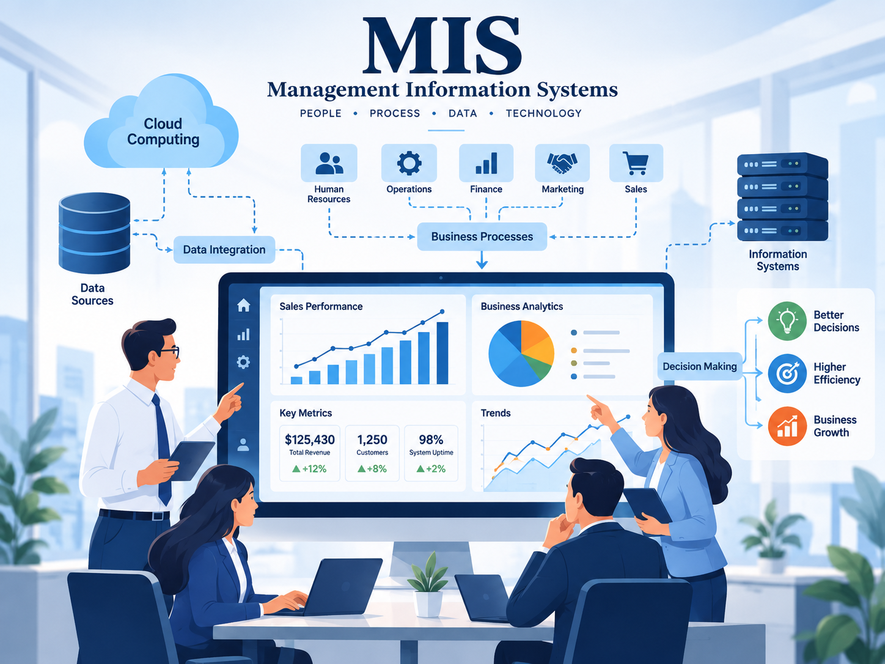

MIS & AI EthicsWebsite OverviewBerkley Austin-RoarkOctober 26, 2026Home | AI Usage | Security | About Me  Management Information Systems (MIS) play an important role in how businesses can organize information, make informed decisions, and operate efficiently. As technology continues to advance Artificial Intelligence has become a highly valuable tool in both education and the workplace.However, its important to understand how to responsibly use AI and recognize the ethical dilemmas that come with it. Cybersecurity is another important role of the MIS because it helps protect personal information, business data, and computer systems from potential threats. My website explores the benefits of AI technology, the differences between correct and incorrect AI usage, and the importance of protecting information from potential cyberattacks. Overall the goal of this website is to help provide a better understanding on how technology can be used effectively, safely, and ethically. You can learn more about how this technology can be use in businesses at Memphis University Memphis University Or explore artificial intelligence in IBM artifical intelligence in IBM, and read about our CIA’s cyber security CIA Cyber Security AI-Polished Paragraph: Management Information Systems (MIS) play an important role in how businesses organize information, make decisions, and operate efficiently. As technology continues to advance, artificial intelligence has become a valuable tool in both education and the workplace. However, it is important to understand how to use AI responsibly and recognize the ethical concerns that come with it. Cybersecurity is another important part of MIS because it helps protect personal information, business data, and computer systems from potential threats. This website will explore the benefits of AI, the differences between correct and incorrect AI usage, and the importance of protecting information from cyberattacks. Overall, the goal of this website is to provide a better understanding of how technology can be used effectively, safely, and ethically. MIS Topics That Impact Businesses
|